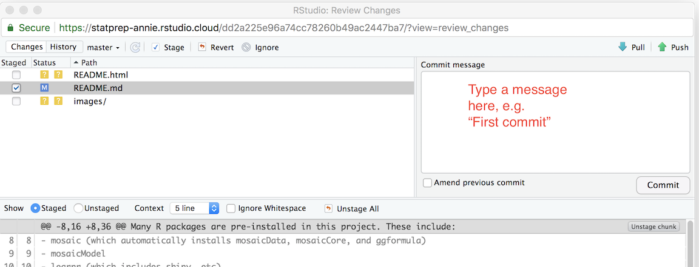

Chapter 3 StatPrep Annie
StatPrep Annie is a persona created to depict a real-world StatPREP instructor who is setting up their statistics course.
Figure 3.1: StatPrep Annie
She’s got a website for her course, a couple of interactive lessons, and so on.
One way to get a quick start on your own website, lessons, etc. is to copy Annie’s project to your own accounts. Then customize it for your own purposes.
You will need two accounts to do this:
Use your own gmail account to set up accounts for your own use. If you don’t have a gmail account, you can set one up as described in Section [#github].
3.1 Copying StatPrep Annie’s StartUsingR project
- Using your browser, login to your account on
rstudio.cloud. The main page for your “workspace” will be displayed. Open a new tab in the browser. Cut and paste exactly this URL into that new tab.
Annie’s template will be copied into your workspace. It will open with a red “Temporary” in the top line.https://rstudio.cloud/project/40418Press “Save a permanent copy” so that you have your own, fully independent copy of Annie’s StartUsingR project.
3.2 Creating a GitHub repository for the StartUsingR project
Leaving your RStudio.cloud tab for a few moments, you’re going to create a new repository on GitHub to use for publishing web pages from your project.
Login to GitHub. Once you have done this, access the +v dropdown menu in the upper right of the GitHub display:

Select “new repository”
In response to your selecting “new repository,” GitHub will display a set-up page:

- Choose a suitable name for the repo. For instance, if this is to be a course site, you might use the name of the course, e.g.
Stat101. - Once you have set the new repository’s name, skip directly on down to the green “Create repository” button. Press it
- Choose a suitable name for the repo. For instance, if this is to be a course site, you might use the name of the course, e.g.
GitHub will now display a “Quick setup page.” Near the top will be a section that looks like this:

Note the repo URL that appears in the editing box. It is composed from your GitHub user name and the name you selected for the repository. Keep that handy. Later, you’re going to paste that URL into a command.
3.3 Connecting your RStudio project to GitHub
Your task now is to connect your own copy of the StartUsingR project to GitHub. To do this, go back to your rstudio.cloud tab displaying your project.
In the Git tab in RStudio, select the “gear” menu and then “shell.”

This will open up a new tab called “Terminal”, next to the console.
In the Terminal tab, cut and paste these commands, making sure to provide your own email address and name rather than StatPrep Annie’s. (If you have multiple email addresses, or multiple names, you can use any of them!)
git config --global user.email "StatPrep.Annie@gmail.com" git config --global user.name "StatPrep Annie"Press enter. There will be no response by the computer. You’re going to be using the terminal tab later, as well.
Give the command, in the terminal tab, that will instruct RStudio to refer to your GitHub repository. The command will look like the following, but you must change
USERNAMEto be your own GitHub username, and changeREPOSITORYto be your own repository, set up in Step (1) of this section.git remote set-url origin <paste_your_repo_URL_here>Again, when you press “enter”, the computer will not respond.
In RStudio, open up some file, say,
README.Rmd, and make some trivial change, such as adding a space after the document title. Then save the file.In RStudio, go to the Git tab. You will see the name of the file you just edited (and maybe some others). Check the little box under “Staged” to the left of the file name. Then, press Commit.
A new window will open that looks like a bigger version of the Git tab.
Write some short message in the box and press the “commit” button underneath the message box.
Almost done … Press the green upward pointing arrow above the message box. You will be prompted to enter your GitHub account ID and password. Do so.
Now back to your GitHub account. Go to the repository you set up and press “settings.” Under gh-pages in settings, select “master branch docs folder.” In response, a github.io URL will appear in the gh-pages section. That’s the address of the web site.
In a few minutes, you should be able to access your copy of StatPrep Annie’s web page from your own GitHub.io address.
To transform StatPrep Annie’s web site to your own, just edit the docs/index.Rmd file in your copy of the project. Then, in the Git tab, follow the stage/commit/push sequence.
3.4 Publishing tutorials on shinyapps.io (IGNORE)
This section is not yet complete.
3.5 Authorizing rstudio.cloud to publish (IGNORE)
You need to authorize rstudio.cloud to publish to your shinyapps.io account. How do you do this? The general idea is that you login to shinyapps.io and ask it to tell you a secret. Then, from rstudio.cloud, you send that secret back to shinyapps.io. Once shinyapps.io knows that rstudio.cloud is in on the secret, shinyapps will accept future commands from you rstudio.cloud account.
- Login to your account on
rstudio.cloud. - Open any project on
rstudio.cloud.- From the RStudio interface, select the “Packages” tab and press “Install”.
- In the dialog box that appears, start typing
rsconnect. At some point, the dropdown menu will show that choice. Click on that and press “Install”.
 3. Login to
3. Login to shinyapps.io. Select the “Dashboard” tab. You’ll see a section entitled “Authorize account” with a display of computer code and a “copy to clipboard” button. Press that button. Depending on your browser, you may be asked to press CNTR-C to copy the code.
- Return to the console in
rstudio.cloudand paste in the code you copied in (3).
Press the “Publish” button. - Select “RStudio Connect” - Select “Publish finished document only” - In the dialog box titled “Select RStudio Connect Account”, type the address shinyapps.io.